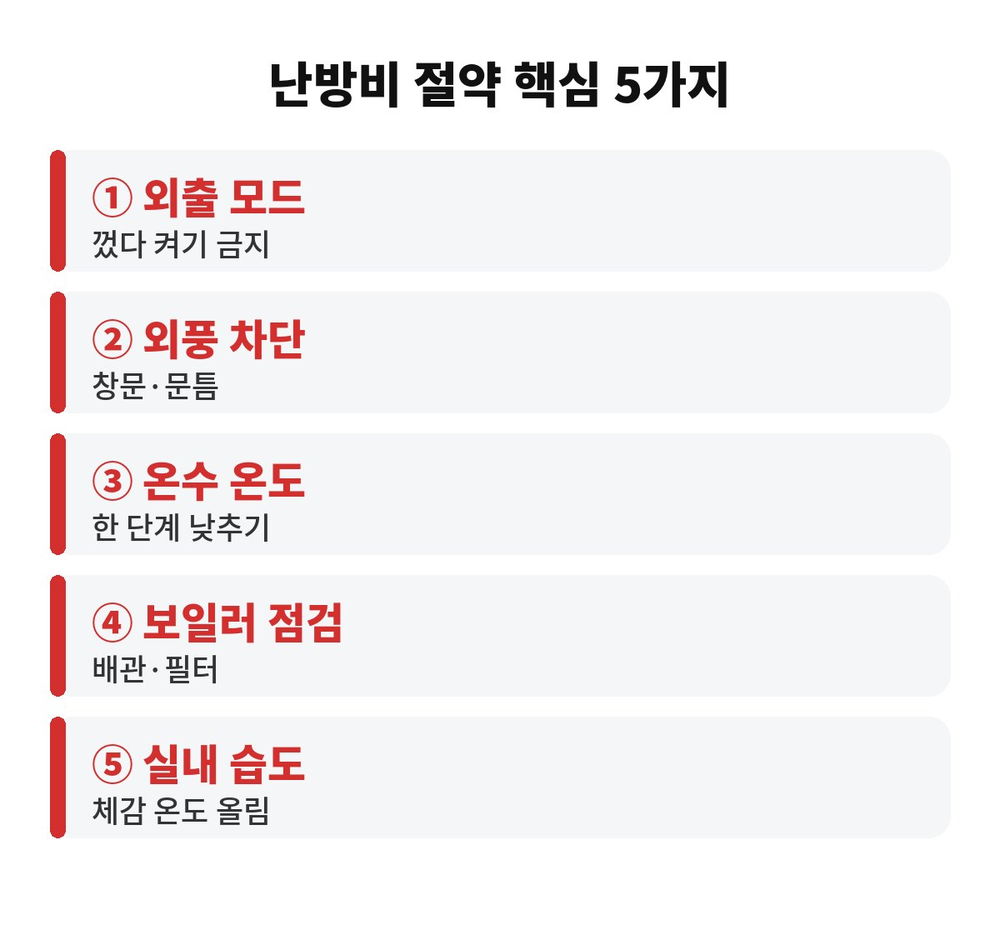
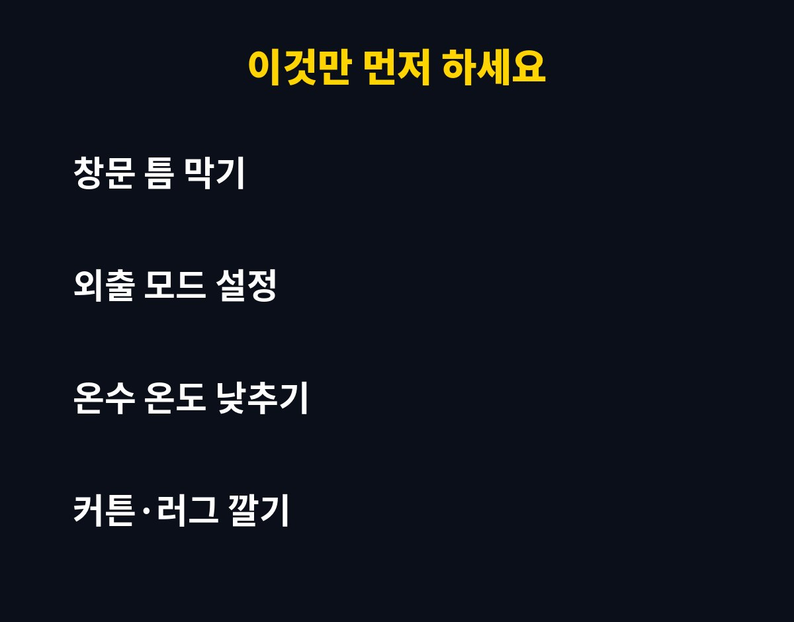

난방비 절약의 핵심은 보일러를 껐다 켜는 습관을 버리고, 집 안의 열이 새는 곳부터 막는 5가지 순서를 지키는 것입니다. 자취생이나 맞벌이라면 "나가면서 끄는 게 이득 아닌가?" 싶으실 텐데, 그 믿음이 오히려 가스비를 키울 수 있는 이유를 풀어드릴게요.
이제 슬슬 아침저녁으로 쌀쌀하죠. 겨울 고지서가 날아오고 나서 후회하면 늦습니다. 지금 설정 몇 가지만 바꿔도 체감이 꽤 다르거든요. 거창한 장비 없이 오늘 바로 할 수 있는 것만 골랐습니다.
많은 분들이 외출할 때 보일러를 완전히 끄는 게 가장 아낀다고 생각합니다. 그런데 집이 완전히 식은 뒤 다시 데우려면 보일러가 한참을 쉬지 않고 돌아야 해요. 집의 크기와 단열 상태에 따라 다르지만, 하루 정도 비우는 경우가 아니라면 껐다 켜는 쪽이 손해가 될 때가 많습니다.
그래서 보통은 외출 모드나 낮은 희망 온도를 쓰라고 권합니다. 집이 너무 식지 않을 만큼만 유지하면, 돌아와서 데우는 시간이 짧아지거든요. 며칠씩 집을 비울 때는 동파 방지 기능이 있는 최저 설정으로 두는 편이 안전합니다.
보일러 온도를 올리기 전에 먼저 볼 곳은 창문과 문틈입니다. 열이 가장 많이 빠져나가는 곳이 거기라서요. 문틈 단열 테이프, 창문 틈새 막이, 뽁뽁이 같은 건 몇 천 원대로 구할 수 있어서 가성비가 아주 좋습니다.
두꺼운 커튼을 내려서 창문 쪽 찬 공기를 가두는 것도 효과가 있어요. 바닥에는 러그나 매트를 깔아 주세요. 같은 온도여도 발이 따뜻하면 체감 온도가 올라가서, 희망 온도를 한 칸 낮추기가 훨씬 쉬워집니다. 난방비 절약은 결국 "체감"을 어떻게 올리느냐의 싸움이에요.
난방만큼 놓치기 쉬운 게 온수입니다. 온수 설정 온도가 필요 이상으로 높으면 그만큼 가스를 더 쓰게 되죠. 씻을 때 불편하지 않은 선에서 한 단계 낮춰 보세요. 가끔은 "이 정도면 충분하네?" 하는 지점이 분명히 있습니다.
또 하나, 보일러 점검입니다. 오래 안 돌린 보일러는 배관에 공기가 차 있거나 필터에 먼지가 쌓여 효율이 떨어질 수 있어요. 방마다 따뜻함이 다르다면 난방 배관 공기 빼기나 점검을 한 번 받아보시길 권합니다. 비용이 들어도 겨울 내내 효율을 챙기는 투자라고 생각하면 마음이 편합니다.
건조한 공기는 같은 온도에서도 더 춥게 느껴집니다. 가습기를 켜거나 빨래를 실내에 널어 습도를 적당히 맞추면 체감이 확 달라져요. 다만 습도가 너무 높으면 곰팡이가 생길 수 있으니 환기는 짧게 자주 하세요. 하루 몇 번, 몇 분만 문을 열어 공기를 바꾸는 정도면 충분합니다.
쓰지 않는 방은 문을 닫고 난방 밸브를 줄여 두는 것도 방법입니다. 사람이 없는 공간까지 데울 필요는 없으니까요. 단, 너무 낮추면 결로가 생길 수 있어서 극단적인 설정은 피하세요.
한 가지 더, 난방비 절약은 한 번에 끝내는 숙제가 아니라 습관이에요. 보일러 희망 온도를 한 칸 낮추고 두꺼운 양말을 신는 정도로 시작해 보세요. 일주일만 지나도 "생각보다 안 춥네?" 하는 순간이 옵니다. 그렇게 적응되면 한 칸 더 낮추는 식으로 천천히 줄여 가면 부담도 적어요.
또 고지서가 나오면 지난달과 비교해 보는 습관도 좋습니다. 어떤 방법이 내 집에서 효과가 있었는지 눈에 보이면 동기부여가 되거든요. 가스 사용량은 집마다 다르니, 남의 후기보다 내 고지서가 가장 정확한 정답지입니다. 메모 앱에 날짜별로 설정을 적어 두면 겨울이 끝날 즈음엔 나만의 최적값이 생겨요.
| 항목 | 이렇게 하세요 |
| 외출 시 | 완전 종료 대신 외출 모드·낮은 온도 |
| 외풍 | 창문·문틈 틈새 막기, 두꺼운 커튼 |
| 온수 | 설정 온도를 한 단계 낮추기 |
| 점검 | 배관 공기 빼기, 보일러 점검 |
| 습도 | 적당히 유지하고 짧게 환기 |

정리하면 난방비 절약은 비싼 장비가 아니라 "새는 곳 막기, 껐다 켜지 않기, 체감 올리기" 세 가지로 요약됩니다. 이 중에서 가장 쉬운 건 오늘 저녁에 창문 틈부터 확인하는 거예요. 집마다 구조가 달라서 효과는 차이가 날 수 있으니, 며칠 써 보고 내 집에 맞게 조정해 보세요.

여러분 집에서 열이 제일 많이 새는 곳은 어디인가요? 댓글로 알려주시면 같이 방법을 찾아볼게요. 도움이 되셨다면 구독해 주세요, 생활 속 돈 아끼는 이야기 계속 가져오겠습니다.
※ 본 글은 일반적인 생활 정보이며 투자 권유가 아닙니다.